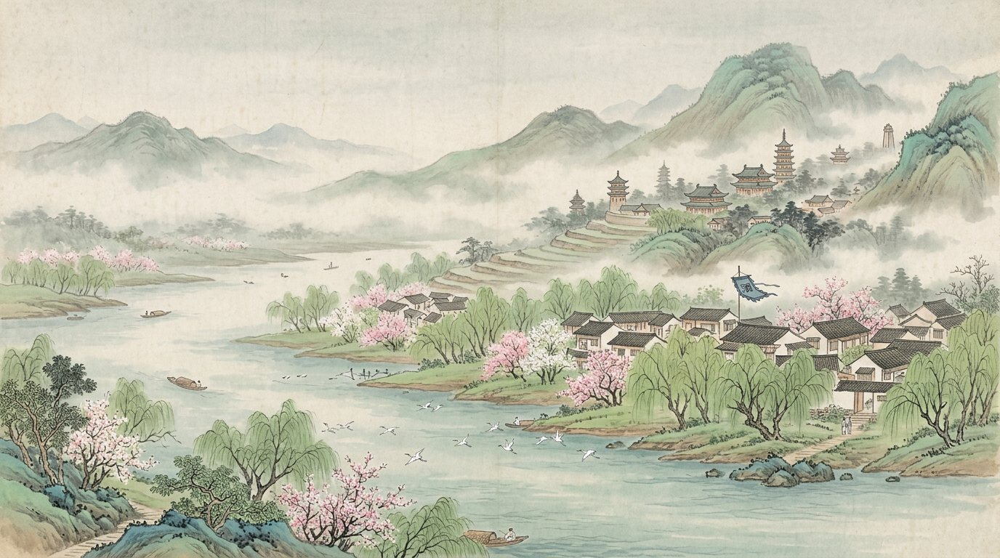
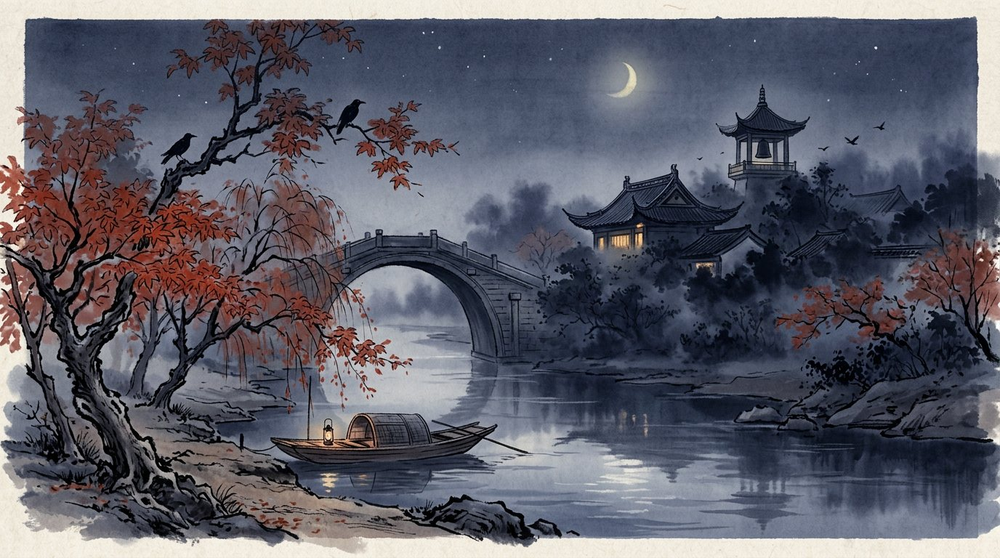
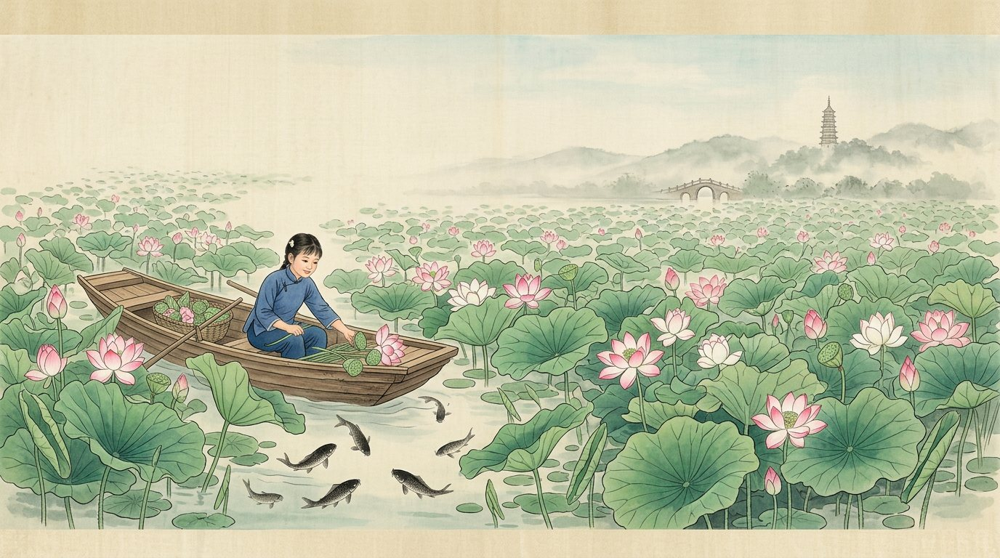
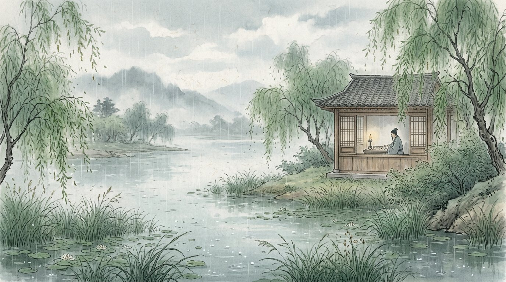

春水碧于天
江南江南水乡诗歌集 · 十六首
江南水乡诗歌集 · 十六首
开篇
白居易《忆江南》其一（唐）
江南好，
风景旧曾谙。
日出江花红胜火，
春来江水绿如蓝。
能不忆江南？
读白居易曾在杭州、苏州做官，晚年回到洛阳仍念念不忘。全词只问一句"能不忆江南？"——不说多想，反问里全是想。红与绿两种颜色，就是江南最鲜明的记忆。
EN: Bai Juyi only asks, "How could I not remember Jiangnan?" The longing hides inside the question.
六个意象
烟雨
Misty rain南朝四百八十寺，都在雨里若隐若现。
小桥
Little bridges水港小桥多，一座桥连起两岸人家。
流水
Flowing water人家尽枕河，枕着水声入梦。
舟
Boats画船听雨眠，乌篷摇过石阶。
莲
Lotus接天莲叶，鱼戏其间。
钟声
Night bells夜半钟声到客船，乡愁有了声音。
卷一春江烟雨
Spring rivers in misty rain

卷二水巷舟桥
Canals, boats and bridges

卷三西湖莲塘
West Lake and lotus ponds

卷四烟雨闲愁
Rain and quiet sorrow

两种江南 · 明媚与烟愁
明媚
日出江花红胜火
白居易、杨万里、张志和——江南是鲜亮的红与绿，是欢喜。
烟愁
一川烟草
贺铸、张继、赵师秀——江南是雨、雾、钟声，是说不尽的闲愁。
桥同一片水，晴时照见欢喜，雨时照见心事。江南诗的含蓄，在于把心事交给水和雨。
EN: The same water mirrors joy in sunshine and longing in rain.
画船听雨眠
梦